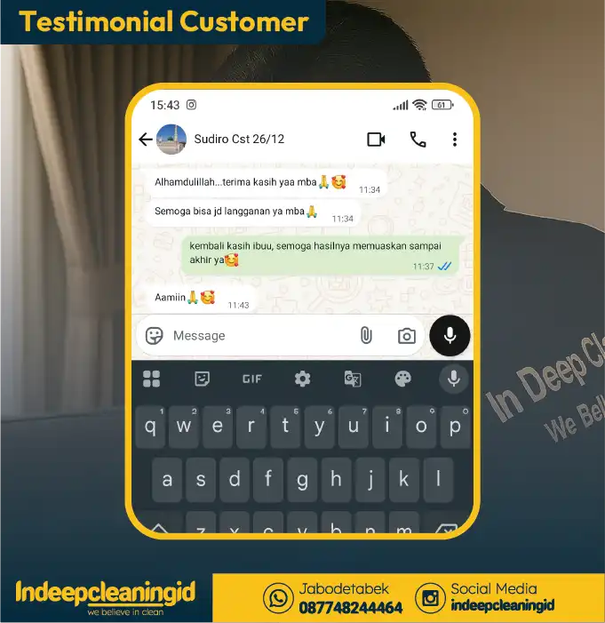
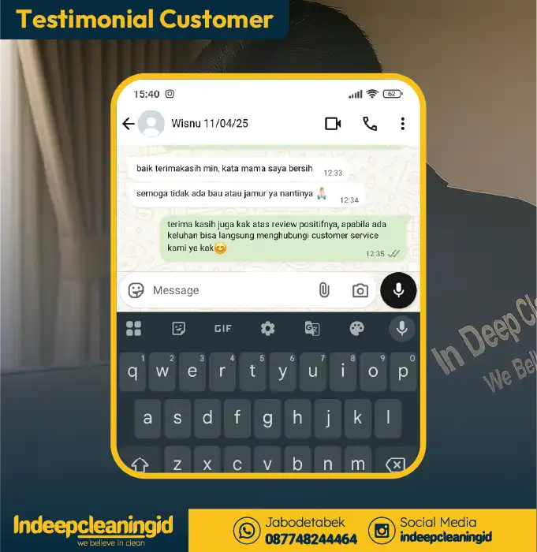

⭐
4.9/5 Rating Google (5.000+ Pelanggan)
Konsultasi MinDI
Jangan buru-buru membuang atau mengganti sofa & kasur yang kotor. Metode QDWC (Quarter Deep Wet Cleaning) mengangkat noda membandel & jutaan tungau sampai tuntas, menjaga serat busa tetap kenyal, dan cepat kering tanpa bau apek.


*Tungau terangkat, noda ompol & keringat bersih tuntas, kain tetap lembut.
Banyak keluarga mengira menunda cuci sofa & kasur itu menghemat biaya. Faktanya, kotoran menumpuk yang mengeras merusak serat kain dan busa secara permanen hingga akhirnya harus membeli unit baru berharga jutaan rupiah.
Noda mengkristal, tungau berkembang biak, dan busa menjadi rapuh & berbau apek menahun.
Memperpanjang usia pakai furniture hingga 5–10 tahun ke depan, bersih higienis seperti baru kembali.
Beda dengan cuci basah konvensional yang menyiramkan air berlebih ke busa terdalam, QDWC (Quarter Deep Wet Cleaning) dirancang khusus menjaga integritas aset Anda.
Vakum bertekanan tinggi menyedot debu, kotoran, dan mikroskopis tungau hingga ke lapisan serat terdalam busa.
Cairan terkontrol presisi sehingga waktu pengeringan hanya 2–4 jam (untuk sofa) dan 4-8 jam (untuk kasur). Bebas risiko busa lembap dan jamur.
Chemical eco-friendly yang lembut di kain/kulit serta 100% aman untuk bayi, anak-anak, dan hewan peliharaan.
Ada aroma apek atau timbul jamur setelah treatment? Tim kami siap datang kembali mencuci ulang GRATIS!
Ketahui perbedaan mendasar mengapa ribuan pemilik rumah memilih metode QDWC kami.
Semua layanan dikerjakan langsung oleh Petugas Professional di rumah Anda. Tanpa biaya tersembunyi.
Kasur Single, Queen, King, hingga Super King.


Sofa Kain, Beludru, Kulit Sintetis, & Sofabed.


Karpet bulu, permadani, kantor & gordyn tanpa lepas.


Jok kain/kulit, karpet dasar, plafon & dashboard.
Stroller, Car Seat, Baby Bouncer, & Box Bayi.
Pilih item perabot Anda sesuai database pricelist resmi In Deep Cleaning ID dan lihat perbandingannya dengan biaya beli unit baru.
Ulasan jujur langsung dari pelanggan yang telah mempercayakan perawatan perabot rumah mereka pada kami.
📍 Jakarta
"Bagus dan bersih banget kak hasilnya, aku sukak!! Aku rekomendasiin ke temen-temen aku biar pada nyuci."
📍 Bekasi
"Kak, aku boleh minta foto before afternya? Soalnya mau aku taro di IG, soalnya aku puas banget, petugasnya juga ramah, dan ngejelasinnya juga detail."

📍 Tebet, Jakarta Selatan
"Alhamdulillah mbak, hasilnya bagus. Semoga bisa jadi langganan ya mbak."
📍 BSD, Tangerang Selatan
"Cukup puas min, petugasnya ramah, dan wangi parfumnya juga kami suka!!"
📍 Bogor
"Bintang 5 kak, buat petugasnya yang datang kesini, terima kasih banyak ya."

📍 Depok
"Terima kasih min! Kata mama saya bersih banget."
Teknisi kami siap datang langsung ke rumah, apartemen, atau kantor Anda tanpa repot.
Hal-hal penting yang perlu Anda ketahui sebelum memesan layanan In Deep Cleaning ID.
Konsultasikan kebutuhan cuci sofa, kasur, karpet, interior mobil, atau baby stuff Anda bersama MinDI. Dapatkan estimasi harga transparan & amankan jadwal pencucian Anda sekarang juga.